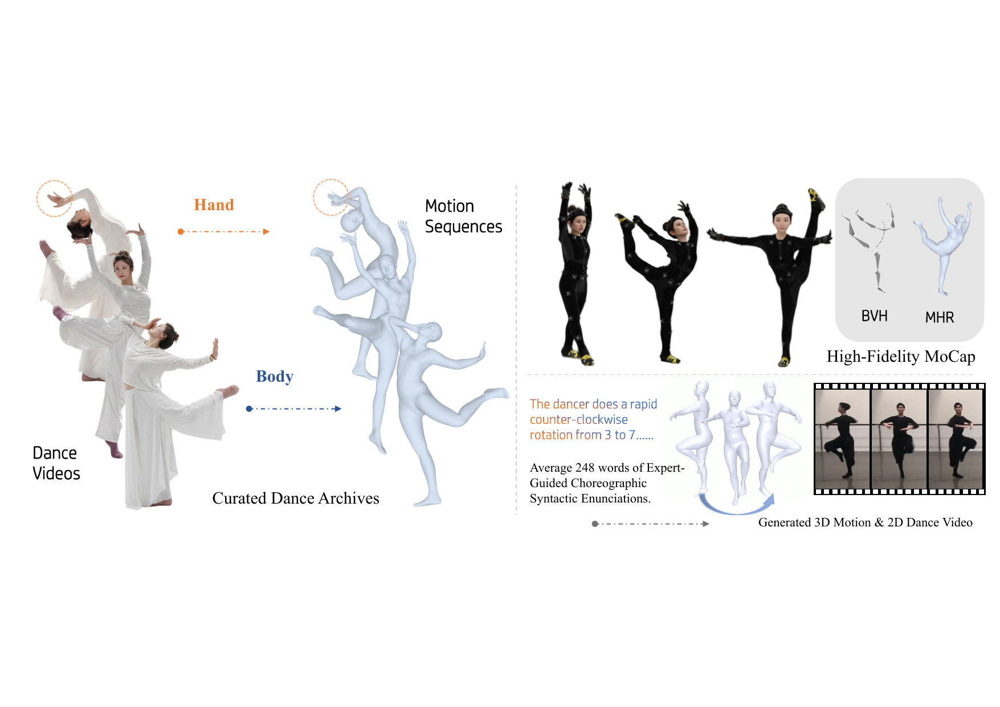

arXiv 2604.18648
cs.CV / cs.AI
Submitted Apr 20, 2026
DanceCrafter: Fine-Grained Text-Driven Controllable Dance Generation via Choreographic Syntax
1
2
3
4
5
6

Abstract
What the paper does
Text-driven controllable dance generation remains under-explored, primarily due to the severe scarcity of high-quality datasets and the inherent difficulty of articulating complex choreographies. Characterizing dance is particularly challenging owing to its intricate spatial dynamics, strong directionality, and the highly decoupled movements of distinct body parts.
To address these issues, DanceCrafter introduces Choreographic Syntax, a theoretical framework grounded in dance studies, human anatomy, and biomechanics, together with a tailored annotation system. Based on this syntax, the work builds DanceFlow, a fine-grained dance dataset containing 41 hours of high-quality motions paired with 6.34 million words of detailed descriptions.
At the model level, the paper proposes a tailored motion transformer built upon the Momentum Human Rig, together with a continuous manifold motion representation, hybrid normalization, and an anatomy-aware loss. Extensive experiments and user studies show strong performance in motion fidelity, fine-grained controllability, and generation naturalness.
Highlights
Core contributions
Choreographic Syntax
A dance-centered annotation framework that describes complex choreography with stronger spatial, directional, and body-part awareness.
DanceFlow Dataset
A large-scale fine-grained dance corpus combining professional dance archives and high-fidelity motion capture data.
DanceCrafter Model
A tailored motion transformer with continuous manifold representation, hybrid normalization, and anatomy-aware supervision.
Paper
Read the full paper on arXiv PDF.
Open PDFAbstract Page
See the arXiv abstract, metadata, and citation record.
Open arXivOverview Figure
Download the original vector figure used as the page head image.
Open Figure PDFVideo Collections
Project videos
The page is already split into the three sections you mentioned. Replace each placeholder block with your final clips when the assets are ready.
Part 1
Motion Capture Dataset
Use this block for representative motion-capture sequences, synchronized previews, or short curated examples from the mocap subset.
Placeholder ready
Add your clips here when the motion capture videos are ready.
Part 2
Video Dataset
Use this section for source dance videos, paired annotations, or selected examples that show the diversity of the video dataset.
Placeholder ready
Add your clips here when the video dataset examples are ready.
Part 3
Generated Motion Videos
Use this area for generated results, prompt-conditioned comparisons, or side-by-side demonstrations of controllable motion quality.
Placeholder ready
Add your clips here when the generated motion videos are ready.
Citation
BibTeX
@misc{yuan2026dancecrafterfinegrainedtextdrivencontrollable,
title={DanceCrafter: Fine-Grained Text-Driven Controllable Dance Generation via Choreographic Syntax},
author={Hang Yuan and Xiaolin Hu and Yan Wan and Menglin Gao and Wenzhe Yu and Cong Huang and Fei Xu and Qing Li and Christina Dan Wang and Zhou Yu and Kai Chen},
year={2026},
eprint={2604.18648},
archivePrefix={arXiv},
primaryClass={cs.CV},
url={https://arxiv.org/abs/2604.18648}
}